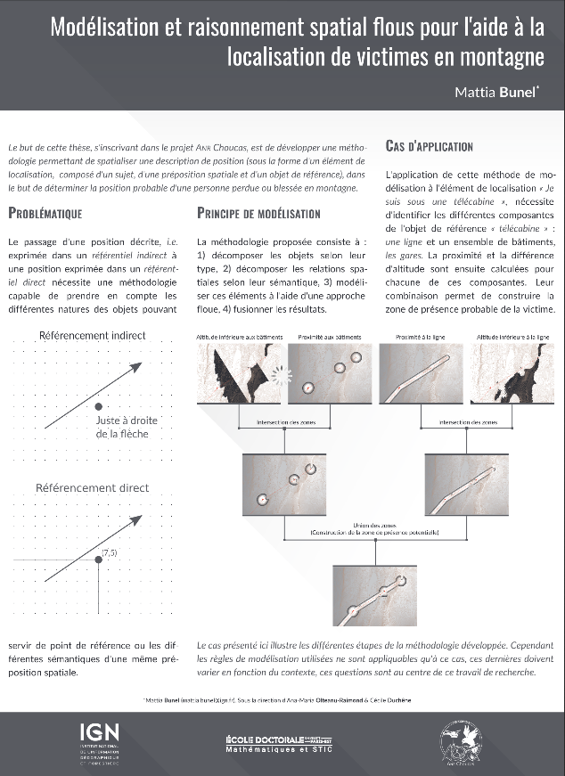
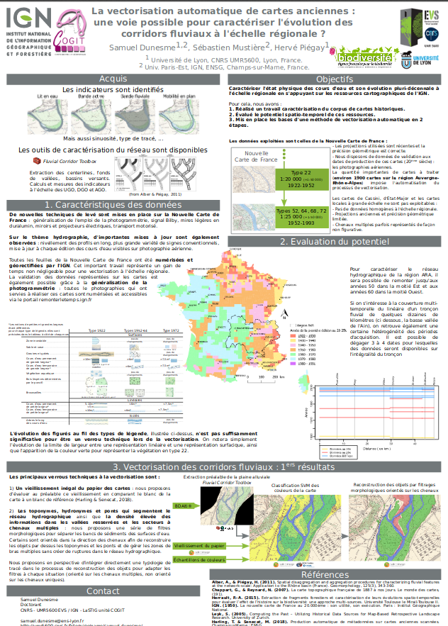
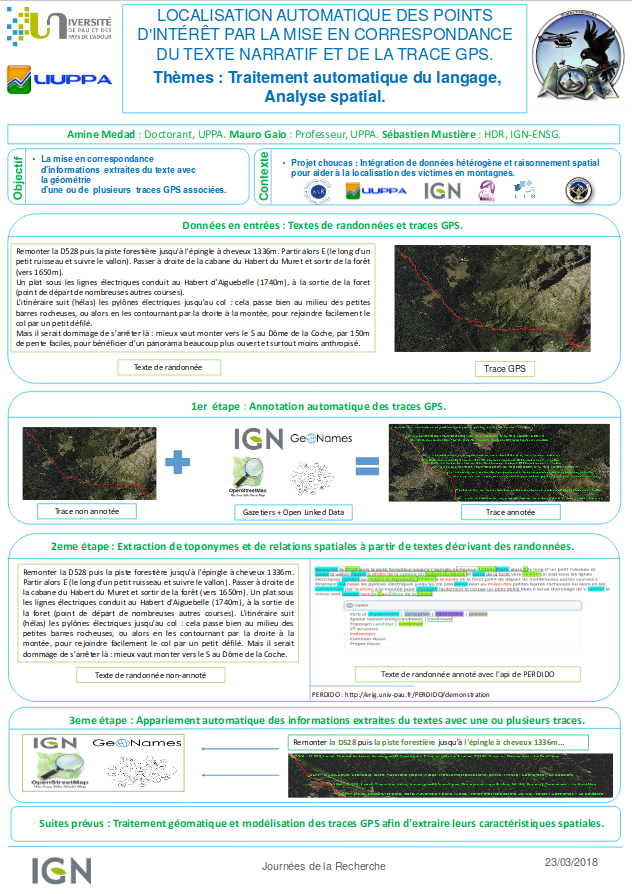
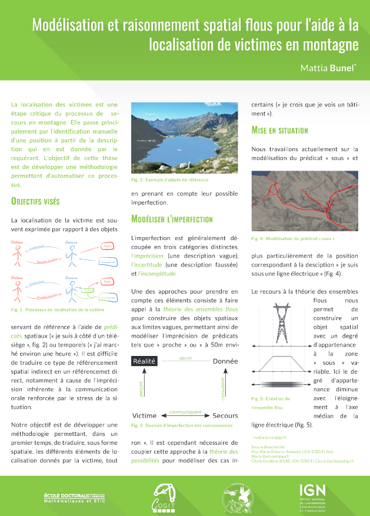

Menu
MEIG
Research
Projects
Education
People
News & Events
News and Events
Events
PhD Poster

Modélisation et raisonnement spatial flous pour l'aide à la localisation de victimes en montagne. M. Bunel

La vectorisation automatique de cartes anciennes : une voie possible pour caractériser l'évolution des corridors fluviaux à l'échelle régionale ? S. Dunesme, H. Piégay.

Localisation automatique des points d'intérêt par la mise en correspondance du texte narratif et de la trace GPS. A. Medad, M. Gaio, S. Mustière

Modélisation et raisonnement spatial flous pour l'aide à la localisation de victimes en montagne. M. Bunel, C. Duchêne, A.-M. Olteanu-Raimond